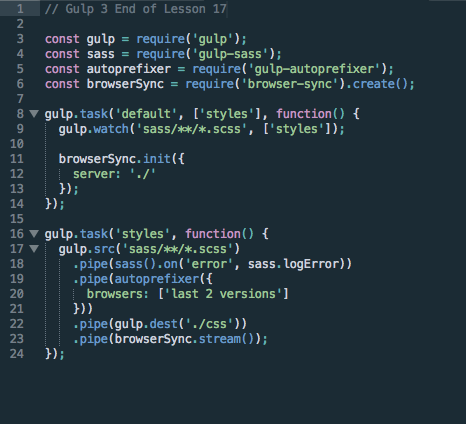
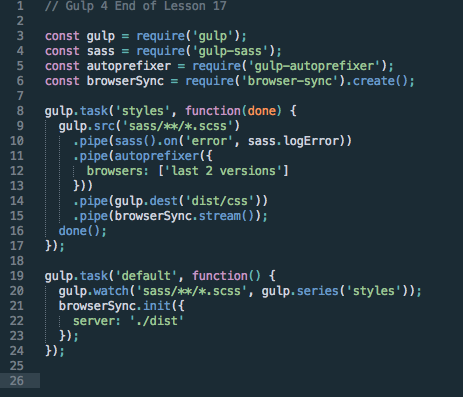

This post assumes you are following along with a Udacity course. If you are not in the FEND Nanodegree program, you can follow along with Udacity's Web Tooling and Automation Course
When you are using things like SASS, you need to re-build your css files every single time you want to check to see what you've done. For people like me, who refresh all the time, this is just unacceptable. Luckily, we have tool for this!
Browser Sync watches your project's files to see if you have made changes, and then it auto-magically rebuilds the css files (in this case- there are other things we might want it to re-build in future) and refreshes the browser. Letting us just code.
This is sort of hinted at the end of Lesson 16, but I know I didn't know if I needed to add this or what. Now is the time to add a watch task to your default task. A watch task is a task in which Gulp is looking for something in your code. In this case, any change.
If you are using Gulp 3: Your 'default' task needs to be the first task. Everything else should follow. In Gulp 4, it is the opposite! Now, you will need to add ['styles'] to the list of paramenter in your default function. Then, add this line to the default function : gulp.watch('sass/**/*.scss', ['styles']);
Altogether, your default task function should look like this:
gulp.task('default', ['styles'], function() {
gulp.watch('sass/**/*.scss', ['styles']);
});
This says: Hey Gulp! Please watch all the files with the extension .scss in my sass folder for changes. If anything changes, pleae apply the styles task to the files. I want to repeat that, because it is cool. We have this 'styles' function, that does great things to our code. But we do not have to manually call it. Gulp figures out when changes happen, and run that function for us.
First, make sure that your 'default' task is the very last task in your gulpfile. The 'styles' task needs to be before it for this to work. Now, add this line to the default function : gulp.watch('sass/**/*.scss', gulp.series('styles');
Altogether, your default task function should look like this:
gulp.task('default', function() {
gulp.watch('sass/**/*.scss', gulp.series('styles'));
});
This says: Hey Gulp! Please watch all the files with the extension .scss in my sass folder for changes. If anything changes, pleae apply the styles task to the files. I want to repeat that, because it is cool. We have this 'styles' function, that does great things to our code. But we do not have to manually call it. Gulp figures out when changes happen, and run that function for us.gulp.series is telling your code how you want it to run. You have a couple options, but the most popular in Gulp 4 are series and parallel. Series means that you want the tasks to run one after another. Parallel means you want them to run at the same time.
Well, if you followed the other tutorials, you might have a good idea of where we might start....
npm install browser-sync <-- in the terminal
const browserSync = require('browser-sync').create(); <-- in the gulpfile.js
Wait...that one was a little different! Yeah, don't forget the create() at the end there!
Ok, now we are going to add some code to our 'default' task. This is the same for Gulp 3 and 4! This is what we are going to add:
browserSync.init({
server: './dist'
});
Last, we are going to add a line to the bottom of our 'styles' function:
.pipe(browserSync.stream());
The first bit tells Gulp that we want it to run a server with the files in our dist folder. The second part tells Browser Sync when it should reload. We don't want it to bother reloading before Gulp is done converting the Sass files into CSS files. So, we put it at the end of the styles function so that it doesn't run until the css files are in the destination.
Now, run the default task. So, gulp in your terminal. After a few seconds, your browser should open up with the sample web page open. I recommend playing with the Sass files now. Watch how it changes in the browser. Once you are done, hit CTRL + C to stop the task and the server. Now, look in your terminal. You likely have some interesting output that shows what happened. Here's mine:
This is what your gulpfile should look like in Gulp 3, and then Gulp 4:
 